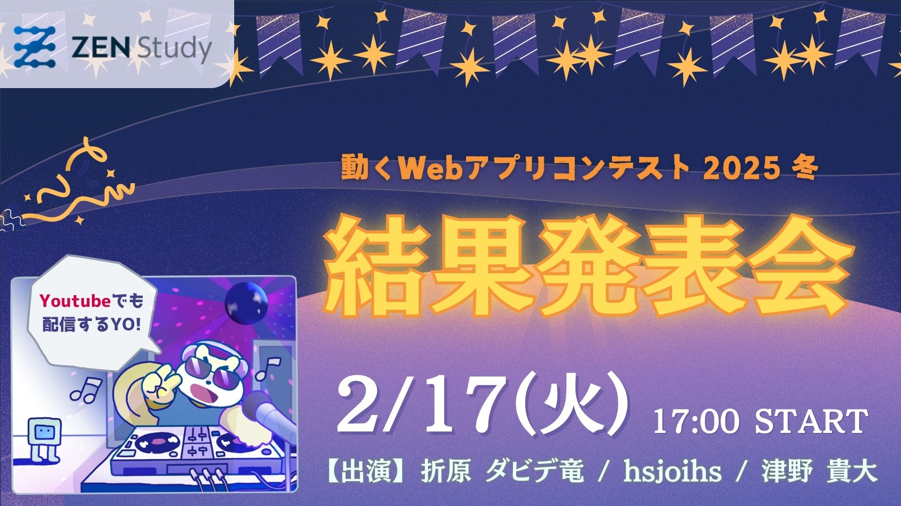

2月17日(火) 17時より結果発表特番を生放送します！
2026年1月15日
「ZEN Study 動くWebアプリコンテスト 2025 夏」には41作品の応募がございました。
たくさんの作品のご応募ありがとうございました。
10月22日(水) 17時より、結果発表特番を生放送します。
各部門・各優秀作品の表彰はもちろんのこと、審査員からのコメント＆アドバイスもあります。
また、惜しくも受賞を逃した作品の中から、視聴者の皆さんで「視聴者特別賞」を選ぶコーナーもございます。
ぜひご覧ください！
※ 視聴者特別賞は、4人の審査員がそれぞれ選んだ4つの候補作品から、投票機能で1作品を選出する形となります。
【出演】
折原ダビデ竜・hsjoihs・津野貴大
【日時】
2026年2月17日(火) 17:00 〜 18:30
【視聴方法】
ZEN Study
https://www.nnn.ed.nico/lessons/482533444

Youtube
https://www.youtube.com/live/xP3aouw2XCg